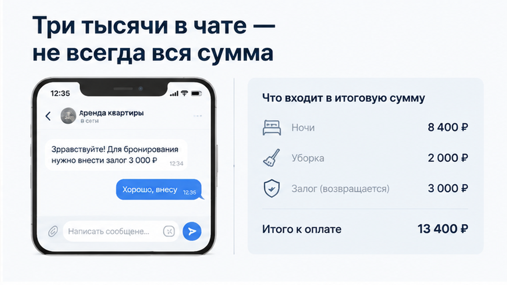
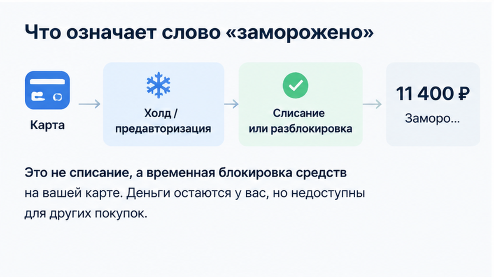
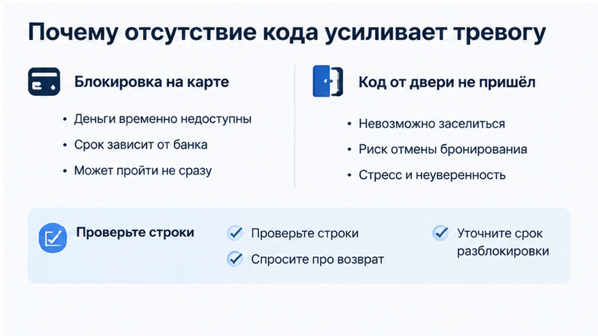

«Залог три тысячи, не переживайте», — пишет хозяин в чате. Гость нажимает «Оплатить», и банк показывает: заморожено 11 400 ₽. Код от двери ещё не прислали. Телефон в руке, доступный остаток на карте уменьшился, а из переписки непонятно: это списание, увеличенный залог или одна большая блокировка за всё сразу?
Это редакционный сценарий из типовых переписок, а не конкретная бронь «Добрый дом» и не история с определённой площадкой. Но неприятный момент здесь настоящий: в чате звучит одна цифра, а на экране появляется другая. И пока кода нет, любая сумма кажется ещё тревожнее.
Я хост посуточной в Тюмени. Это «Добрый дом». На вопросы о заселении и оплате отвечаем в Telegram и MAX.

Когда человек читает про залог 3 000 ₽, он обычно воспринимает эту цифру как отдельную будущую операцию. Проживание — отдельно, залог — отдельно. Но платёжная форма может собрать несколько строк в одну авторизацию: стоимость ночей, уборку, сервисный сбор и обеспечительный платёж.
Поэтому 11 400 ₽ нельзя автоматически назвать залогом. Это якорь примера, а не доказанная формула «залог умножили почти в четыре раза». Точно так же нельзя сразу говорить, что 11 400 ₽ уже ушли хозяину. На экране может быть не списание, а временный резерв средств.
В похожей ситуации важно открыть не только переписку, но и сам экран оплаты. Там должны быть видны количество ночей, цена проживания, уборка, сервисная строка и депозит, если он предусмотрен. Одна фраза в чате не заменяет детализацию.

Холд, или предавторизация, — это временная блокировка суммы на карте. Банк резервирует деньги: потратить их пока нельзя, но это ещё не означает окончательное списание. Позже операция может перейти в списание либо резерв разблокируют. Как быстро это произойдёт, зависит от банка-эмитента и конкретной платёжной схемы. Универсальный срок обещать нельзя.
В объяснениях Yandex Pay этот порядок разделён именно так: сначала временная блокировка, затем списание или разблокировка. Для гостя разница не только в терминах. Если деньги списали, нужно искать получателя и основание операции. Если их заблокировали, сначала нужно понять состав авторизации и статус брони.
Правильная первая мысль здесь не «у меня украли деньги» и не «ничего страшного, подожду». Она проще: «У меня зарезервировали сумму, и я хочу увидеть, из чего она состоит».
Похожий checkout-сюрприз мы уже показывали в истории, где в карточке стояло 3 400 ₽ за ночь, а на оплате вышло 8 816 ₽ за две. Механика близкая: цена в карточке или чате не всегда равна финальному итогу экрана.

Сама банковская блокировка выглядит сухо и скучно. Страшной её делает пустота вокруг: код не пришёл, номер подъезда неизвестен, хозяин отвечает «позже» или вовсе молчит. Гость видит минус 11 400 ₽ в доступном остатке и не понимает, будет ли у него дверь.
Но отсутствие кода само по себе не доказывает, что сумма списана или что это именно залог. Нужно разделить два события: платёжную авторизацию и выдачу инструкции для заселения.
И не стоит путать холд через платёжную форму с переводом на карту «для закрепления». В отдельной истории мы писали о ситуации, когда в фильтре было «без предоплаты», а перевод попросили до кода заселения. Ещё один сценарий — предоплата 3 000 ₽ и тишина в чате после перевода. Там деньги уходят напрямую человеку, а не временно резервируются платёжной системой. Это уже другая история и другой риск.
Если у вас заморозили 11 400 ₽, кода нет, а хозяин молчит — отменять бронь или ждать? Ответ зависит от того, где оформлена бронь, какой статус указан в банке и какие строки есть на экране. Такой вопрос можно принести в Telegram или MAX — без названий и личных данных, только с закрытыми реквизитами скриншотами.
До подтверждения оплаты полезно задать хозяину три коротких вопроса. Первый: «Из чего складывается итоговая сумма?» Пусть отдельно назовут ночи, уборку, сервисный сбор и депозит. Второй: «Залог блокируется или списывается?» Это не одно и то же. Третий: «Когда и каким способом возвращается депозит?» Ответ должен содержать условия, а не только «не переживайте».
На некоторых площадках полная сумма проживания, уборка и депозит показываются в объявлении или на финальном экране. Например, у Sutochno.ru гость видит полную стоимость бронирования, а сумма страхового депозита и уборки должны быть указаны в объявлении. Это не значит, что такие правила автоматически действуют на любом сервисе. Канал бронирования нужно проверять отдельно.
Если в карточке написано одно, а у двери просят другое, это уже отдельный сюжет. Мы разбирали его в материале про стиральную в карточке и залог у двери. Здесь же речь о другом: деньги ещё до ключа и непонятный состав банковской блокировки.
В «Добром доме» стараемся называть не только размер залога, но и итог, который увидит гость на оплате. Если сумма складывается из нескольких строк, их нужно объяснить до подтверждения, а не после. Код заселения тоже должен приходить по заранее понятному порядку: человеку с чемоданом нужна инструкция к двери, а не ожидание в чате.
У каждого сервиса могут быть свои правила, но принцип один: сначала проверка, потом перевод. Не наоборот. Если код не прислали, а сверху просят ещё одну сумму «на всякий случай», остановитесь и спросите, за что именно платёж.
Сначала проверка. Потом перевод. 3 000 ₽ в чате и заморозка 11 400 ₽ на экране не обязательно означают обман: в одну авторизацию могли попасть проживание, уборка, сервисный сбор и депозит. Но это и не повод молча подтверждать сумму. Сначала нужно увидеть строки, статус операции в банке и условия брони, а уже потом ждать код и ключ.
Следить за новостями и чеклистами можно в Telegram и MAX. Забронировать квартиру в Тюмени — через сайт или форму бронирования. Телефон: +7 (993) 574-83-22. Менеджер: Telegram менеджера.